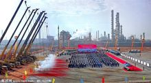

2011年茂名市石化基地项目完成后，茂名具备每年2550万吨炼油能力，每年至少新增产值超500亿元和税金100多亿元，是中国重要的石化基地。早在1994年，茂名市就已跻身全国55个国内生产总值超200亿元的城市行列，经济总量连续多年位居粤东西北首位。茂名已形成一个以石油化工、农产品加工、矿产品加工和机械电子为支柱，建材、陶瓷、轻纺、皮革、塑料、造纸、食品、医药等行业共同发展的门类较齐、结构逐步改善的工业格局。
2014年，全市完成生产总值2349亿元，增长10.4%。公共财政预算收入100.4亿元，增长11.1% ；城镇居民人均可支配收入22040元，增长10%，农民人均纯收入11881元，增长11%。完成固定资产投资850.6亿元，增长36.1%，其中工业投资增长30.3%，交通建设投资增长79.4%。省、市重点项目分别完成投资计划118%和95.1%，同比提高5.4和7.7个百分点。信贷投放力度加大，年末人民币贷款余额748.9亿元，增长17.6%；存贷比为42.4%，提高1.7个百分点。
2010年全年粮食作物播种面积26.56万公顷，增长4.3%；总产量152.56 万吨，增长5.4%。水果面积23.51万公顷, 总产量234.59万吨，增长5.4%。其中荔枝面积9.42万公顷，总产量41.82万吨，增长7.5%；龙眼面积5.21万公顷，总产量25.41万吨，增长7.0%。
茂名市水果品种多样，以名优水果如三华李、香蕉、龙眼、荔枝、芒果、树菠萝、黄榄、蔬菜为龙头的“三高农业”闻名遐迩，2004年的总产量分别达到190多万吨和200多万吨。所属高州市（县）有“中国水果生产第一市（县)”，水果种植面积已达380多万亩。全市逐步形成了以荔枝带、龙眼带、中部香蕉生产区为特点的“两带一区”的水果种植布局，如荔枝品种中的 “白糖罂”、“鉴江红糯”，“储良广眼”龙眼、“高脚遁地雷”香蕉、“红杨桃”等 果品，享誉海内外。信宜银妃三华李靠互联网+飞向世界各地。
在1996年“中华之最”评选活动中，茂名市被国务院发展研究中心命名为“中国最大的水果生产基地”。2000年，时任中共中央总书记江泽民同志在高州出席县级领导干部“三讲”教育动员会，期间亲手植下“中华红”荔枝树，使高州荔枝更是名扬天下。
2014年，新增国家级农民专业合作社示范社12家，合作社总量全省第一。省水果产业带项目落户茂名，全国500强企业海亮集团千亩种植基地落户高州；粤西农批首期实现对外招商；新建一批农产品冷链配送物流项目。新建钢质渔船80艘，成为我省拥有钢体渔船最多的市。
茂名养殖最多的是罗非鱼。2008年后，广东茂名市积极发展特色渔业、效益渔业，引导渔（农）民奔小康致富，取得了显著成效。特别是2013年在全省淡水鱼市场普遍疲软的情况下，茂名淡水鱼各大产区却成交活跃，产销两旺，价格稳中有升，渔业经济对全市农业经济增长的贡献率达到13.5%。茂名市罗非鱼产量占全国同种鱼类产量的12%，成为全国最大的罗非鱼生产基地。
茂名市2010年水产品总产量81.47万吨,比2009年增长6.0%。茂名市在高州南部、化州东南部、茂南西部的12个镇建设起养殖面积近30万亩罗非鱼“金三角”基地。10年后，全市罗非鱼年产量达13万吨，产量约占全省的1/3、全国的1/8、全球的1/12，是中国乃至全世界当之无愧的罗非鱼大市。
2014年，全市实现规上工业增加值712.2亿元，增长16.8%，其中地方规上工业增加值374.5亿元，增长18.2%。支持茂名石化公司发展，该公司加工原油1803万吨，增长10.6%；乙烯产量114万吨，居全国之首。推进园区扩能增效，3个省级园区实现规上工业增加值77.1亿元，同比增长20.9%。
茂名市以炼油、乙烯生产为龙头的石油化工工业在全国占有重要位置，是广东省重要的能源、原材料和重化工业基地。2013年茂石化炼油加工能力、乙烯生产能力分别突破2000万吨/年和110万吨/年，比原计划2020年炼油达到2000万吨/年提早了7年，拥有华南地区最大的原油加工能力，有“中国南方油城”之称。预计，茂名石化到 2015 年将形成3000万吨/年炼油能力，到 2020年形成 4000 万吨/年以上炼油能力。同时配套新建一套 100万吨/年乙烯装臵和 100 万吨/年芳烃联合装臵，到 2020年形成 200 万吨/年乙烯和 100万吨/年芳烃的生产能力，以满足中下游石化产业发展对原料的需求。此外，茂名市还有400多家各类型的化工企业相映争辉，出产的油品和化工产品品种多达400多种。
茂名市辖区内已查明的矿产57种，其中“南玉”、金沙玉、高岭土等矿产资源为主的开发、加工工业，具有鲜明的优势和特色。广东省迎接香港回归赠送的玉雕珍品--“一帆风顺”即出自信宜市工匠之手。油页岩、高岭土储量居全国首位，黄金、锡、钛、锆英石、稀 土、瓷土、花岗岩储量居本省前列。茂名市包括矿产品开采和加工在内的矿产经济总产值约22亿元。
辖区内信宜市玉器加工有着一百六十多年的历史。以信宜著名的南玉、金沙玉为原料，加工成的1000多个花色品种的玉器工艺品驰名中外。主要品种有一帆风顺、慈云塔、玉珠佛塔、南玉景泰蓝杯，玉雕龙船、玉石仙桃盆景、金沙月饼等。广东南玉工艺总公司生产的玉器工艺品远销世界40多个国家和地区，先后获得“全国优秀旅游纪念品奖”、“全国工艺美术优秀创作设计一等奖”、“全国轻工出口产品银质奖”、“首届北京国际博览会金质奖”、“广东省优质产品奖”、中国南玉之都等多种奖励。
2014年完成社会消费品零售总额1113.9亿元，增长10.4%。加快引进和建设城市综合体。举办系列展销活动，促进汽车、房产等商品消费。推动茂名水果网上销售，全市电商平台荔枝、龙眼销售量同比增长5倍。开展李花节、荔枝节等特色活动，全年接待游客1487.1万人，同比增长28.9%。